Week 9: Derivative-Free Optimization and MCMC
NRES 746
Oct. 19-21, 2026
R code from this page is also in the companion script. Packages: emdbook, coda, cmdstanr.
This material follows Bolker, Ecological Models and Data in R, sections 7.2.3 through 7.3 (pp. 302-319).
Derivative-free optimization and the Metropolis algorithm
Derivative-based optimizers such as Newton's method and BFGS use the slope of the negative log-likelihood (NLL) to find its minimum. This part covers two optimizers that need no derivatives (Nelder-Mead and simulated annealing), then shows how a small change to simulated annealing turns it from a way to find the best parameter values into a way to sample the whole posterior distribution: the Metropolis algorithm, the basis of Markov chain Monte Carlo (MCMC).
1. Big picture

Everything on this page belongs to the FIT step: confronting a model with data. Fitting by maximum likelihood means finding the lowest point on the NLL surface. Methods that follow the slope are fast near the answer but need derivatives, and they can fail far from the answer or on a bumpy surface. Two questions:
- How do we search when slopes are unavailable or misleading?
- For a Bayesian fit, how do we get the posterior when there are too many parameters for a grid and no conjugate prior to give the answer in closed form?
The answer to the second question grows out of the answer to the first.
The running example is Bolker's myxomatosis data: virus titers in 27 rabbits (grade 1 virus), modeled with a Gamma distribution.
library(emdbook)
titer <- subset(MyxoTiter_sum, grade == 1)$titer # myxo titers, 27 rabbits
# gamma NLL; Inf outside the allowed range so optimizers can't use it
nll_gamma <- function(p) {
if (any(p <= 0)) return(Inf)
-sum(dgamma(titer, shape = p[1], scale = p[2], log = TRUE))
}
# NLL surface over a shape x scale grid, for the background contours
shape_vec <- seq(10, 90, length.out = 120)
scale_vec <- seq(0.03, 0.32, length.out = 120)
surf <- outer(shape_vec, scale_vec, Vectorize(function(a, s) nll_gamma(c(a, s))))
# contour plot of NLL minus its minimum
plot_surface <- function(...) {
contour(shape_vec, scale_vec, surf - min(surf),
levels = c(1, 2, 5, 10, 20, 50, 100, 200, 500, 1000),
xlab = "shape", ylab = "scale", col = "grey60", labcex = 0.6, ...)
}2. Nelder-Mead simplex
Nelder-Mead only compares NLL values; it never computes a slope. With two parameters it moves a triangle (a "simplex"; \(k + 1\) points for \(k\) parameters) across the surface:
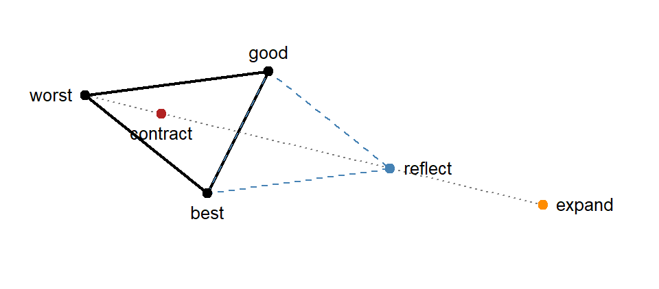
- Rank the three points by NLL: best, good, worst.
- Reflect the worst point through the midpoint of the other two.
- If the reflection beats the best point, try going twice as far (expand) and keep whichever of the two is lower.
- Else, if the reflection beats the good point, keep it.
- Else, try a point halfway between the worst point and the midpoint (contract); keep it if it beats the worst point.
- If even that fails, shrink the whole triangle halfway toward the best point.
- Repeat until the NLL values at the three points are nearly equal.
The triangle stretches out where the surface falls steadily, turns to follow a valley, and shrinks as it closes in on the minimum.
# hand-coded Nelder-Mead for two parameters; stores every simplex
nelder_mead <- function(f, start, step, n_iter = 80) {
simplex <- rbind(start, start + c(step[1], 0), start + c(0, step[2]))
vals <- apply(simplex, 1, f)
history <- vector("list", n_iter)
moves <- character(n_iter)
for (it in seq_len(n_iter)) {
o <- order(vals) # best first, worst last
simplex <- simplex[o, ]
vals <- vals[o]
history[[it]] <- simplex
centroid <- colMeans(simplex[1:2, ])
refl <- centroid + (centroid - simplex[3, ]) # reflect the worst point
f_r <- f(refl)
if (f_r < vals[1]) {
expd <- centroid + 2 * (centroid - simplex[3, ]) # best yet: try expanding
f_e <- f(expd)
if (f_e < f_r) {
simplex[3, ] <- expd; vals[3] <- f_e; moves[it] <- "expand"
} else {
simplex[3, ] <- refl; vals[3] <- f_r; moves[it] <- "reflect"
}
} else if (f_r < vals[2]) {
simplex[3, ] <- refl; vals[3] <- f_r; moves[it] <- "reflect"
} else {
contr <- centroid + 0.5 * (simplex[3, ] - centroid) # still bad: contract
f_c <- f(contr)
if (f_c < vals[3]) {
simplex[3, ] <- contr; vals[3] <- f_c; moves[it] <- "contract"
} else {
simplex[2:3, ] <- (simplex[2:3, ] + rbind(simplex[1, ], simplex[1, ])) / 2
vals[2:3] <- apply(simplex[2:3, ], 1, f)
moves[it] <- "shrink"
}
}
}
list(best = simplex[which.min(vals), ], value = min(vals),
history = history, moves = moves)
}
nm <- nelder_mead(nll_gamma, start = c(20, 0.05), step = c(5, 0.02))
round(c(shape = nm$best[1], scale = nm$best[2], nll = nm$value), 3)## shape scale nll
## 49.611 0.140 37.667table(nm$moves)##
## contract expand reflect shrink
## 46 8 25 1# first 30 triangles, colored by move
move_cols <- c(expand = "darkorange", reflect = "steelblue",
contract = "firebrick", shrink = "purple")
plot_surface()
for (i in 1:30) polygon(nm$history[[i]], border = move_cols[nm$moves[i]], lwd = 1.5)
legend("topright", names(move_cols), col = move_cols, lwd = 2, bty = "n")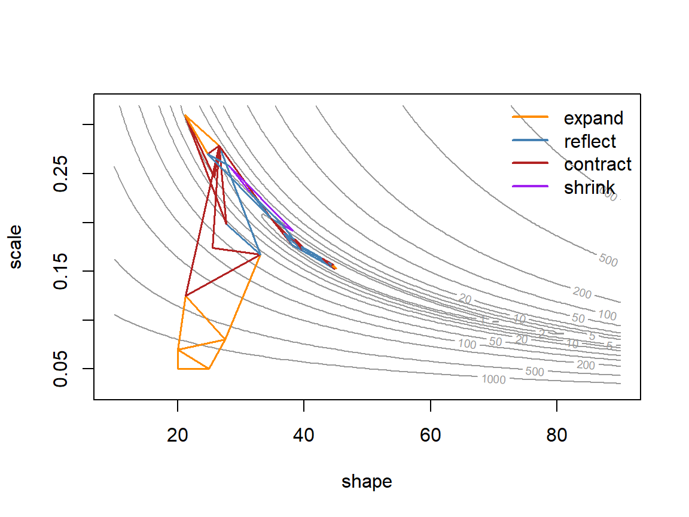
The triangle expands across the contours, contracts as it turns into the curved valley, then crawls along the valley floor. In the widget below, step a triangle through a curved valley yourself.
Nelder-Mead is optim()'s default method:
fit_nm <- optim(c(20, 0.05), nll_gamma)
fit_nm[c("par", "value", "counts", "convergence")]## $par
## [1] 49.602640 0.139584
##
## $value
## [1] 37.66714
##
## $counts
## function gradient
## 147 NA
##
## $convergence
## [1] 0It needed 147 NLL evaluations, more than a derivative-based method would near the answer. In exchange, it can't be misled by a bad derivative, and bumps, kinks, and thresholds in the NLL don't stop it.
Question: Try the widget's "near the minimum" start. Why do the triangles keep shrinking, and how could you use their size to decide when to stop?
3. Simulated annealing
Any method that only goes downhill finds whichever valley it starts in. If the NLL has more than one valley, that may not be the deepest one. Simulated annealing (Bolker p. 306) sometimes accepts uphill moves so it can escape:
- Propose a random point near the current one.
- If its NLL is lower, move there.
- If its NLL is higher by \(\Delta\), move there anyway with probability \(e^{-\Delta/T}\).
- Repeat, lowering the "temperature" \(T\) now and then.
The name comes from metallurgy: a metal cooled slowly settles into a low-energy crystal structure. At a high temperature the search accepts most uphill moves and explores widely; as it cools it becomes a pure downhill search.
# acceptance probability exp(-delta / T) for a few temperatures and NLL increases
accept_tab <- outer(c(10, 1, 0.1), c(0.5, 2, 10),
function(temp, delta) exp(-delta / temp))
dimnames(accept_tab) <- list(paste("T =", c(10, 1, 0.1)),
paste("NLL worse by", c(0.5, 2, 10)))
signif(accept_tab, 2)## NLL worse by 0.5 NLL worse by 2 NLL worse by 10
## T = 10 0.9500 8.2e-01 3.7e-01
## T = 1 0.6100 1.4e-01 4.5e-05
## T = 0.1 0.0067 2.1e-09 3.7e-44In the widget, the search starts in the shallow valley on the right. Try a cold start, a hot start that cools quickly, and a hot start that never cools.
The same algorithm on the myxomatosis surface:
# simulated annealing: accept worse steps w.p. exp(-delta / temp); cool temp over time
anneal <- function(f, start, step_sd, n_steps = 3000, temp0 = 10,
cool = 0.9, every = 100) {
current <- start
f_current <- f(current)
best <- current
f_best <- f_current
temp <- temp0
track <- matrix(NA, n_steps, 4,
dimnames = list(NULL, c("shape", "scale", "nll", "temp")))
for (i in seq_len(n_steps)) {
proposal <- current + rnorm(length(current), 0, step_sd)
f_prop <- f(proposal)
if (is.finite(f_prop) && runif(1) < exp(-(f_prop - f_current) / temp)) {
current <- proposal
f_current <- f_prop
}
if (f_current < f_best) {
best <- current
f_best <- f_current
}
track[i, ] <- c(current, f_current, temp)
if (i %% every == 0) temp <- temp * cool
}
list(best = best, value = f_best, track = track)
}
set.seed(746)
sa <- anneal(nll_gamma, c(20, 0.05), step_sd = c(2, 0.005))
round(c(shape = sa$best[1], scale = sa$best[2], nll = sa$value), 3)## shape scale nll
## 50.182 0.138 37.668# left: path on the surface; right: NLL of the current point at each step (log axis)
par(mfrow = c(1, 2))
plot_surface()
lines(sa$track[, "shape"], sa$track[, "scale"], col = adjustcolor("darkorange", 0.5))
plot(sa$track[, "nll"], type = "l", log = "y", xlab = "Step", ylab = "Current NLL")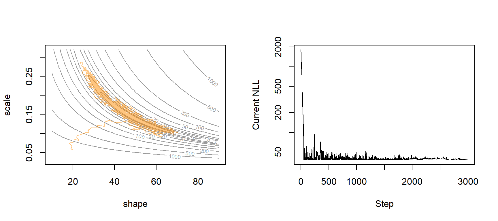
par(mfrow = c(1, 1))The NLL drops from about 1,800 to under 100 within the first 50 steps, then bounces above the minimum (37.67) because worse moves are still accepted. As \(T\) falls from 10 to about 0.5 the bounces shrink and the search settles. That took 3,000 NLL evaluations for what Nelder-Mead did in 147. optim() has a built-in annealer:
set.seed(746)
fit_sann <- optim(c(20, 0.05), nll_gamma, method = "SANN")
fit_sann[c("par", "value", "counts", "convergence")]## $par
## [1] 23.1909794 0.2977502
##
## $value
## [1] 40.7738
##
## $counts
## function gradient
## 10000 NA
##
## $convergence
## [1] 0Question: With default settings, SANN reports an NLL of 40.77 after 10,000 evaluations, with
convergence = 0; Nelder-Mead reached 37.67. Is SANN broken? Should you trustconvergence = 0?
4. The Metropolis algorithm
Keep the annealing rule but change three things, and the chain of visited points becomes a sample from the posterior distribution:
- Fix \(T = 1\) and never cool. The probability of accepting an uphill step becomes \(e^{-(\text{NLL}_{new} - \text{NLL}_{old})} = \mathcal{L}(\theta_{new}) / \mathcal{L}(\theta_{old})\).
- Use the posterior instead of the likelihood: \[P(\text{accept}) = \min\left(1, \frac{P(\theta_{new} \mid y)}{P(\theta_{old} \mid y)}\right)\]
- Keep every step, not only the best one.
Writing Bayes' rule into the ratio shows why this is practical:
\[\frac{P(\theta_{new} \mid y)}{P(\theta_{old} \mid y)} = \frac{\mathcal{L}(\theta_{new})\, P(\theta_{new}) / P(y)} {\mathcal{L}(\theta_{old})\, P(\theta_{old}) / P(y)}\]
The denominator \(P(y)\) cancels. Computing \(P(y)\) requires integrating the likelihood times the prior over every possible parameter value, which is why a Bayesian fit otherwise needs a grid (feasible for one or two parameters) or a conjugate prior (available only for some models). Metropolis needs only likelihood times prior, at two points at a time.
Why the chain lands on the posterior. Take two parameter values, \(A\) and \(B\), with \(P(A \mid y) = 2\,P(B \mid y)\). From \(B\), a proposal to move to \(A\) is always accepted; from \(A\), a proposal to move to \(B\) is accepted half the time. In the long run the chain sits at \(A\) twice as often as at \(B\). The same holds for every pair of values, so the time the chain spends near any \(\theta\) is proportional to its posterior probability.
Two consequences:
- A rejected proposal means record the current value again. The repeats are how the chain gives extra weight to high-posterior regions; skipping them gives the wrong distribution.
- The chain is not supposed to converge to a single point. Wandering through the posterior is the goal.
The proposal here is symmetric (a normal jump centered on the current value), so a jump from \(A\) to \(B\) is as likely to be proposed as a jump from \(B\) to \(A\). With an asymmetric proposal, the Metropolis-Hastings rule multiplies the ratio by \(q(\theta_{old} \mid \theta_{new}) / q(\theta_{new} \mid \theta_{old})\), where \(q\) is the proposal density, to correct for the imbalance.
Example: germination. 30 of 40 seeds germinated. With a flat (Beta(1, 1)) prior, the exact posterior is Beta(31, 11), so we can check the sampler against it.
# germination trial: 30 of 40 seeds; flat prior, so log posterior = log likelihood + const
k <- 30
n <- 40
log_post_germ <- function(p) {
if (p <= 0 || p >= 1) return(-Inf)
dbinom(k, n, p, log = TRUE) + dbeta(p, 1, 1, log = TRUE)
}
# Metropolis sampler: accept w.p. min(1, Post(new) / Post(old)); returns the whole chain
metropolis <- function(log_post, start, step_sd, n_steps) {
chain <- matrix(NA, n_steps, length(start), dimnames = list(NULL, names(start)))
current <- start
lp_current <- log_post(current)
n_accept <- 0
for (i in seq_len(n_steps)) {
proposal <- current + rnorm(length(start), 0, step_sd)
lp_prop <- log_post(proposal)
if (log(runif(1)) < lp_prop - lp_current) { # log of the posterior ratio
current <- proposal
lp_current <- lp_prop
n_accept <- n_accept + 1
}
chain[i, ] <- current # a rejected step records the current value again
}
attr(chain, "accept_rate") <- n_accept / n_steps
chain
}
set.seed(746)
chain_germ <- metropolis(log_post_germ, start = 0.5, step_sd = 0.1, n_steps = 5000)
attr(chain_germ, "accept_rate")## [1] 0.5858Question: The annealer accepted with
runif(1) < exp(-delta / temp);metropolis()useslog(runif(1)) < lp_prop - lp_current. Are these different rules?
# trace plot, then histogram of the chain vs. the exact posterior, Beta(31, 11)
par(mfrow = c(1, 2))
plot(chain_germ, type = "l", xlab = "Step", ylab = "p")
hist(chain_germ, breaks = 40, freq = FALSE, main = "", xlab = "Germination probability, p")
curve(dbeta(x, 31, 11), add = TRUE, lwd = 2, col = "darkorange")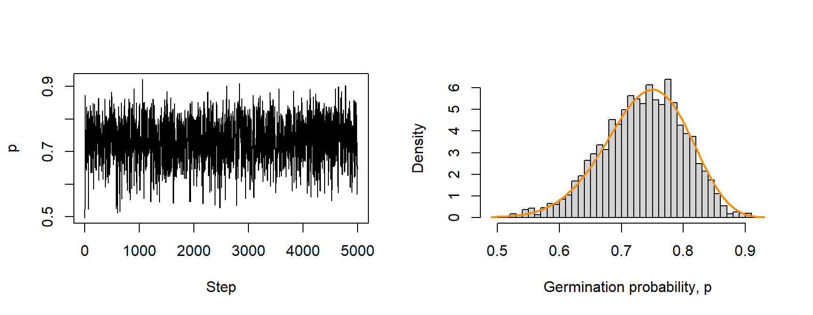
par(mfrow = c(1, 1))
# posterior summaries from the chain vs. exact
rbind(chain = c(mean = mean(chain_germ), quantile(chain_germ, c(0.025, 0.975))),
exact = c(31 / 42, qbeta(c(0.025, 0.975), 31, 11)))## mean 2.5% 97.5%
## chain 0.7341027 0.5937651 0.8499169
## exact 0.7380952 0.5969538 0.8577870The chain accepted 59% of its proposals, and its histogram matches the exact posterior.
Two parameters: myxomatosis. The same function samples the Gamma model's shape and scale, with flat priors on the positive values (so the log posterior is the negative NLL plus a constant):
set.seed(746)
chain_myxo <- metropolis(function(p) -nll_gamma(p),
start = c(shape = 20, scale = 0.05),
step_sd = c(4, 0.01), n_steps = 20000)
attr(chain_myxo, "accept_rate")## [1] 0.27815plot_surface()
points(chain_myxo[seq(1, 20000, by = 10), ], pch = 16, cex = 0.3,
col = adjustcolor("steelblue", 0.4))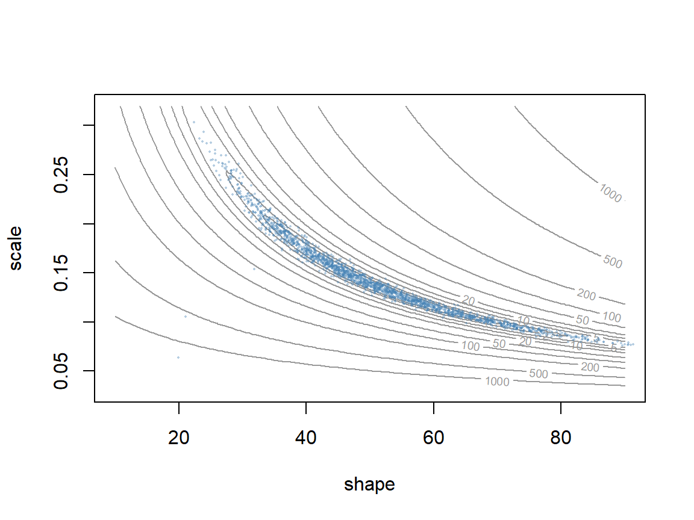
# 95% credible intervals, dropping the first 2000 steps
apply(chain_myxo[-(1:2000), ], 2, quantile, c(0.025, 0.5, 0.975))## shape scale
## 2.5% 28.97286 0.08511468
## 50% 49.20264 0.14048690
## 97.5% 81.46669 0.24469750The draws fill the banana-shaped valley. The first 2,000 steps are dropped because the chain started far from the posterior (see which chains can you trust?). This chain mixes slowly: shape and scale trade off along a narrow, curved ridge, so most independent jumps in the two parameters leave it. Why random walks struggle takes this up.
Working on the log scale
Samplers compute the log posterior, never the posterior itself. This short section shows why, and what the acceptance rule looks like on the log scale.
Why logs?
A likelihood is a product of one density per observation, and products of many small numbers underflow: they become smaller than the smallest number the computer can store, and R returns 0.
set.seed(1)
y_sim <- rnorm(1000, 10, 2)
prod(dnorm(y_sim, 10, 2)) # the likelihood itself: underflows to 0## [1] 0sum(dnorm(y_sim, 10, 2, log = TRUE)) # the log likelihood is fine## [1] -2147.143A ratio of two zeros is undefined, so a sampler built on the raw posterior fails. On the log scale:
- log posterior = log likelihood + log prior (+ a constant);
- the posterior ratio becomes a difference, \(\log P(\theta_{new} \mid y) - \log P(\theta_{old} \mid y)\);
- accept when \(\log u\) is less than that difference, where \(u \sim \text{Uniform}(0, 1)\), since \(u < e^x\) exactly when \(\log u < x\).
Only the difference is ever exponentiated (if at all), and a difference of log posteriors is a modest number even when each posterior is astronomically small.
Checking chains, Hamiltonian Monte Carlo, and Stan
A Metropolis chain gives samples from the posterior eventually, but how do we know it has? This part covers checking chains (burn-in, mixing, R-hat, effective sample size), why random-walk samplers struggle when parameters are correlated, and Hamiltonian Monte Carlo (HMC), the sampler behind the Stan software.
1. Which chains can you trust?
Three chains on the germination posterior (exact mean 0.738), each starting at \(p = 0.05\) and running 1,000 steps, with different proposal SDs:
step_sds <- c(0.005, 0.1, 3)
chains <- lapply(step_sds, function(s) {
set.seed(1)
metropolis(log_post_germ, start = 0.05, step_sd = s, n_steps = 1000)
})
round(rbind(step_sd = step_sds,
accept_rate = sapply(chains, attr, "accept_rate"),
post_mean = sapply(chains, mean)), 3)## [,1] [,2] [,3]
## step_sd 0.005 0.100 3.000
## accept_rate 0.871 0.591 0.042
## post_mean 0.383 0.733 0.697Question: The chain with the smallest jumps accepted 87% of its proposals; the one with the largest accepted 4%. A labmate says the first chain is the best, since nearly every proposal was accepted. Which chain would you trust, and what would you check?
par(mfrow = c(3, 1), mar = c(4, 4, 1.5, 0.5))
for (i in seq_along(chains)) {
plot(chains[[i]], type = "l", ylim = c(0, 1), xlab = "Step", ylab = "p",
main = paste("step sd =", step_sds[i]))
abline(h = 31 / 42, lty = 2, col = "darkorange")
}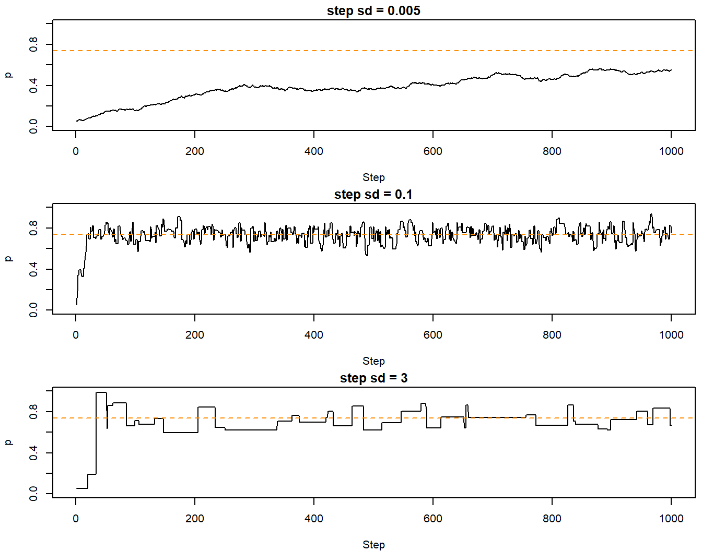
par(mfrow = c(1, 1), mar = c(5, 4, 4, 2) + 0.1)Things to check in any chain:
- Burn-in. A chain "remembers" its starting value for a while. The early stretch that trends toward the posterior is the burn-in (Stan calls it warmup); drop it before summarizing.
- Mixing. A chain that mixes well moves through the whole posterior quickly, so its trace plot looks like random noise around a stable level (a "fuzzy caterpillar"). Tiny jumps creep; huge jumps are mostly rejected, leaving flat stretches. A high acceptance rate is not a quality score.
- Several chains from different starts. If they have all found the posterior, they should look the same. The Gelman-Rubin diagnostic, \(\hat{R}\) (R-hat), compares the variation between chains with the variation within them. Values near 1 mean the chains agree; a common rule is \(\hat{R} < 1.01\).
- Effective sample size (ESS). Successive draws are correlated, so 1,000 steps carry less information than 1,000 independent draws. The ESS is the number of independent draws the chain is worth. It drops as the autocorrelation rises.
Try these in the widget: change the jump size, drop a burn-in, and turn on three chains to see R-hat.
The autocorrelation function shows how quickly a chain forgets where it was. Compare the well-tuned germination chain with the myxomatosis chain:
par(mfrow = c(1, 2))
acf(chain_germ[-(1:500)], lag.max = 50, main = "Germination, step sd 0.1")
acf(chain_myxo[-(1:2000), "shape"], lag.max = 500, main = "Myxomatosis shape")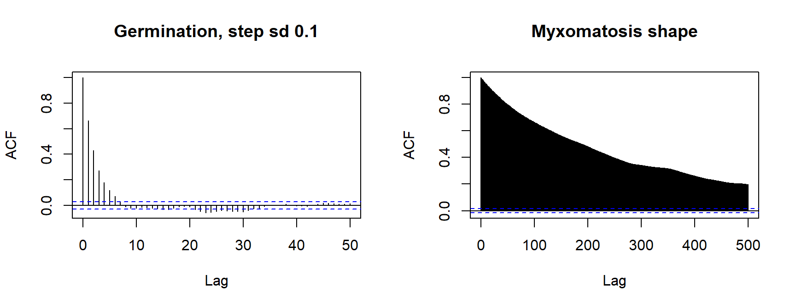
par(mfrow = c(1, 1))
library(coda)
c(germination = effectiveSize(chain_germ[-(1:500)]),
myxo_shape = effectiveSize(chain_myxo[-(1:2000), "shape"]))## germination.var1 myxo_shape.var1
## 913.59262 42.75732Thinning (keeping every 5th or 10th draw) makes the kept draws less correlated, but it throws information away: the thinned chain has fewer effective draws, not more. Thin to save memory or disk space, not to improve estimates.
2. Why random walks struggle
The myxomatosis chain kept 18,000 steps but is worth only about 43 independent draws of shape. The problem is the shape of the posterior: a long, narrow, tilted ridge.
- Jumps must be small enough to stay inside the narrow direction, so progress along the long direction is slow.
- A random walk covers distance only in proportion to \(\sqrt{\text{number of steps}}\).
- With many parameters it gets worse: almost every random direction points uphill.
A simple test case: two parameters, each Normal(0, 1), with correlation \(\rho = 0.95\).
rho <- 0.95
sigma_inv <- solve(matrix(c(1, rho, rho, 1), 2))
log_post_bvn <- function(p) -0.5 * drop(t(p) %*% sigma_inv %*% p)
grad_bvn <- function(p) -drop(sigma_inv %*% p) # gradient of the log posterior
# contours of the target, for the background of the plots
plot_bvn <- function(main) {
g <- seq(-3, 3, length.out = 100)
z <- outer(g, g, Vectorize(function(a, b) log_post_bvn(c(a, b))))
contour(g, g, z, levels = c(-0.5, -2, -4.5), drawlabels = FALSE, col = "grey60",
xlab = expression(theta[1]), ylab = expression(theta[2]), main = main)
}
set.seed(3)
rw <- metropolis(log_post_bvn, start = c(-2, -2), step_sd = 0.25, n_steps = 200)
effectiveSize(rw[, 1])## var1
## 6.022575(drop() turns the 1 \(\times\) 1 and 2 \(\times\) 1 matrices that %*% returns into a plain number and a plain vector.)
Gibbs sampling. The first widely used Bayesian software, BUGS (Bayesian inference Using Gibbs Sampling) and later JAGS, updates one parameter at a time, drawing it from its full conditional distribution: its posterior given the current values of all the other parameters. With conjugate priors those conditionals have known forms, so each draw is exact and nothing is rejected. (When they don't, the software substitutes a Metropolis-type step.) For our target, each conditional is normal: \(\theta_1 \mid \theta_2 \sim \text{Normal}(\rho\,\theta_2, \sqrt{1 - \rho^2})\).
# Gibbs sampler: draw each parameter in turn from its conditional distribution
gibbs <- function(start, rho, n_steps) {
chain <- matrix(NA, n_steps, 2)
x <- start
for (i in seq_len(n_steps)) {
x[1] <- rnorm(1, rho * x[2], sqrt(1 - rho^2))
x[2] <- rnorm(1, rho * x[1], sqrt(1 - rho^2))
chain[i, ] <- x
}
chain
}
set.seed(3)
gb <- gibbs(c(-2, -2), rho, 200)
effectiveSize(gb[, 1])## var1
## 14.10493par(mfrow = c(1, 2))
plot_bvn("Random-walk Metropolis, 200 steps")
lines(rw, col = "steelblue")
plot_bvn("Gibbs, 200 sweeps")
# each sweep moves horizontally (theta1 update), then vertically (theta2 update)
gb_path <- cbind(rep(gb[, 1], each = 2), as.vector(rbind(c(-2, gb[-200, 2]), gb[, 2])))
lines(rbind(c(-2, -2), gb_path), col = "steelblue")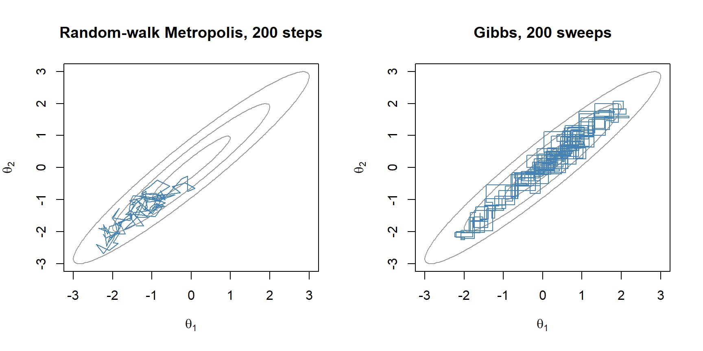
par(mfrow = c(1, 1))Gibbs never rejects a draw, but each move goes parallel to one axis, and only as far as the conditional distribution allows. With correlated parameters the conditionals are narrow (SD \(\sqrt{1 - \rho^2}\) as a share of the marginal SD), so the chain zigzags up the ridge in short steps:
rhos <- c(0.5, 0.95, 0.99)
round(data.frame(rho = rhos, conditional_sd = sqrt(1 - rhos^2),
lag1_autocorrelation = rhos^2,
ess_per_sweep = (1 - rhos^2) / (1 + rhos^2)), 3)## rho conditional_sd lag1_autocorrelation ess_per_sweep
## 1 0.50 0.866 0.250 0.600
## 2 0.95 0.312 0.902 0.051
## 3 0.99 0.141 0.980 0.010(For this target each Gibbs sweep's \(\theta_1\) chain is autocorrelated with coefficient \(\rho^2\), which gives the last two columns.) Gibbs works well when parameters are close to independent, however many there are, and poorly when they are strongly correlated. The correlation, not the number of parameters, is what matters.
3. Hamiltonian Monte Carlo
HMC uses the gradient (slope) of the log posterior to make long, well-aimed proposals. Picture the negative log posterior as a bowl, so "downhill" means toward more plausible parameter values, and slide a frictionless puck across it:
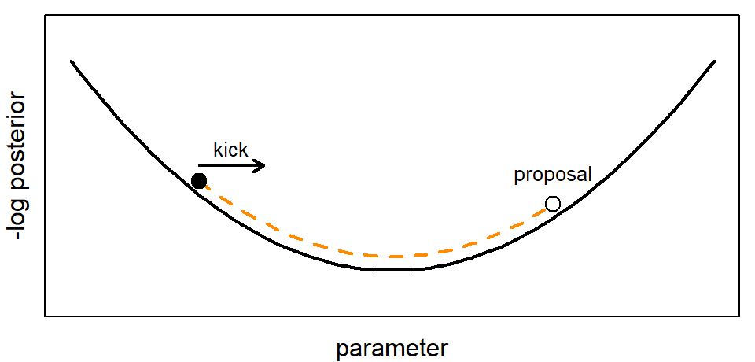
- Give the puck a random kick: a momentum \(m\) drawn from a normal distribution.
- Let it slide for \(L\) small time steps of size \(\epsilon\). Going downhill it speeds up, converting potential energy into kinetic energy; going uphill it slows, and eventually turns back. Each step uses the gradient to update the momentum ("leapfrog" steps).
- Where it stops is the proposal. Accept it with the Metropolis rule applied to the total energy, \(H(\theta, m) = -\log P(\theta \mid y) + \tfrac12 \sum m^2\): accept with probability \(\min(1, e^{-\Delta H})\).
Exact physics would conserve \(H\), so every proposal would be accepted. The leapfrog steps are approximate, and the accept/reject step corrects for their error; with a small \(\epsilon\) nearly everything is accepted. The momentum is drawn fresh each iteration and then discarded, so the recorded draws come from the posterior alone. HMC is still a Metropolis algorithm. What's new is a proposal that travels far and is still likely to be accepted.
# one HMC step: random momentum kick, L leapfrog steps along the gradient, then accept/reject
hmc_step <- function(p, log_post, grad, eps, L) {
m <- rnorm(length(p))
p_new <- p
m_new <- m
path <- matrix(p, nrow = 1)
g <- grad(p_new)
for (i in seq_len(L)) {
m_new <- m_new + 0.5 * eps * g # half step for momentum
p_new <- p_new + eps * m_new # full step for position
g <- grad(p_new) # one new gradient per step; reused by the next half step
m_new <- m_new + 0.5 * eps * g # half step for momentum
path <- rbind(path, p_new)
}
# total energy = -log posterior + kinetic energy m^2 / 2; accept w.p. exp(-change)
log_accept <- log_post(p_new) - 0.5 * sum(m_new^2) - log_post(p) + 0.5 * sum(m^2)
list(p = if (log(runif(1)) < log_accept) p_new else p, path = path)
}
# run n HMC steps; keep the first few trajectories for plotting
hmc <- function(start, log_post, grad, eps, L, n_steps, n_paths = 5) {
chain <- matrix(NA, n_steps, length(start))
paths <- list()
p <- start
for (i in seq_len(n_steps)) {
s <- hmc_step(p, log_post, grad, eps, L)
p <- s$p
chain[i, ] <- p
if (i <= n_paths) paths[[i]] <- s$path
}
list(chain = chain, paths = paths)
}
set.seed(3)
hm <- hmc(c(-2, -2), log_post_bvn, grad_bvn, eps = 0.1, L = 10, n_steps = 200)
c(random_walk = effectiveSize(rw[, 1]), gibbs = effectiveSize(gb[, 1]),
hmc = effectiveSize(hm$chain[, 1]))## random_walk.var1 gibbs.var1 hmc.var1
## 6.022575 14.104926 182.611011# side by side: random walk vs. HMC, same number of iterations
par(mfrow = c(1, 2))
plot_bvn("Random walk")
lines(rw, col = "steelblue")
plot_bvn("HMC (orange: first five trajectories)")
points(hm$chain, pch = 16, cex = 0.5)
for (pa in hm$paths) lines(pa, col = "darkorange", lwd = 2)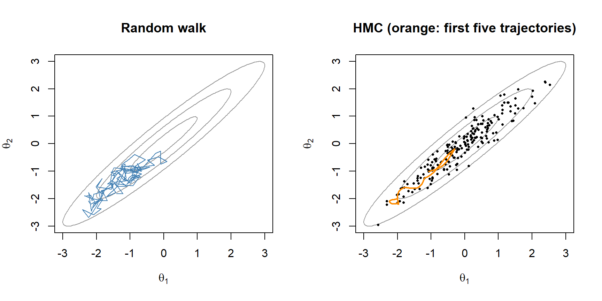
par(mfrow = c(1, 1))Question: Each HMC iteration here costs 11 gradient evaluations (one per leapfrog step, plus one at the start), against one density evaluation per random-walk step. Is it still worth it?
Compare all three samplers, and change the correlation, in the widget:
A few details matter in practice:
- Step size \(\epsilon\) and number of steps \(L\). Too large an \(\epsilon\) overshoots the curve of the surface, so proposals get rejected, or the trajectory blows up. Too small an \(\epsilon\) wastes gradient evaluations. Too few steps and HMC behaves like a random walk; too many and the trajectory loops back toward where it started.
- NUTS. Stan's default sampler, the No-U-Turn Sampler, tunes \(\epsilon\) during warmup and picks \(L\) separately for each iteration: it keeps doubling the trajectory until the two ends start to turn back toward each other (a U-turn), then draws the next point from along the trajectory.
- The mass matrix. During warmup Stan also estimates each parameter's posterior scale and rescales the parameters so one \(\epsilon\) works in every direction. By default this rescaling is diagonal: it fixes differences in scale but not correlation, which the trajectories handle by bending (at the cost of more steps).
- Gradients for free. Stan computes the gradient from your model code by automatic differentiation: it applies the chain rule to each step of the calculation, so the gradients are exact and you never derive them by hand.
4. Stan: the myxomatosis model
Stan is a language for writing down a model; it compiles the model to C++ and samples it with NUTS. We run it from R with the cmdstanr package (setup instructions: cmdstanr quick start). Here is the Gamma model for the myxomatosis titers, with flat priors on the positive values as before:
library(cmdstanr)
myxo_code <- "
data {
int<lower=0> N;
vector<lower=0>[N] titer;
}
parameters {
real<lower=0> shape;
real<lower=0> scale;
}
model {
titer ~ gamma(shape, 1 / scale); // Stan's gamma uses shape and rate
}
"
myxo_model <- cmdstan_model(write_stan_file(myxo_code)) # compiles to C++ (slow, once)
fit_stan <- myxo_model$sample(data = list(N = length(titer), titer = titer),
chains = 4, parallel_chains = 4, seed = 746)A Stan program is made of blocks, always in this order. This model uses three; all are optional in principle.
| Block | What goes there |
|---|---|
functions |
your own functions |
data |
declarations of the inputs passed from R |
transformed data |
quantities computed from the data only |
parameters |
what the sampler explores, with any bounds (<lower=0>) |
transformed parameters |
quantities computed from parameters, saved with each draw |
model |
priors and likelihood (the log posterior) |
generated quantities |
anything computed once per saved draw (derived quantities, simulated data) |
Every variable is declared with a type, lines end in ;, and comments start with //. Each ~ statement adds a log density to the log posterior (Stan calls the running total target), so a model block is a log posterior written out term by term. With no prior statement, a parameter declared <lower=0> gets a flat prior on the positive values.
fit_stan$summary()## # A tibble: 3 × 10
## variable mean median sd mad q5 q95 rhat ess_bulk
## <chr> <dbl> <dbl> <dbl> <dbl> <dbl> <dbl> <dbl> <dbl>
## 1 lp__ -36.8 -36.4 1.04 0.716 -38.9 -35.8 1.00 866.
## 2 shape 48.1 47.4 13.2 13.2 27.9 71.0 1.00 452.
## 3 scale 0.156 0.146 0.0489 0.0405 0.0978 0.249 1.00 449.
## # ℹ 1 more variable: ess_tail <dbl>fit_stan$diagnostic_summary()## $num_divergent
## [1] 0 0 0 0
##
## $num_max_treedepth
## [1] 0 0 0 0
##
## $ebfmi
## [1] 0.8580162 1.1393600 0.9712159 1.1187068# Stan's 4,000 draws on the NLL surface
draws <- fit_stan$draws(c("shape", "scale"), format = "draws_matrix")
plot_surface()
points(draws[, "shape"], draws[, "scale"], pch = 16, cex = 0.3,
col = adjustcolor("darkorange", 0.4))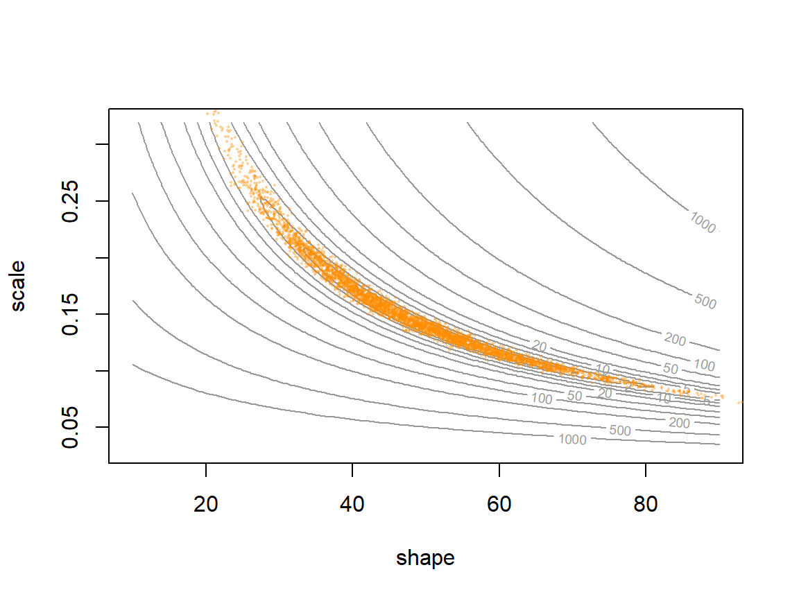
# effective draws: 18,000 kept Metropolis steps vs. Stan's 4,000 draws
keep <- chain_myxo[-(1:2000), ]
rbind(metropolis = effectiveSize(keep),
stan = fit_stan$summary(c("shape", "scale"))$ess_bulk)## shape scale
## metropolis 42.75732 43.43315
## stan 451.90083 448.69306# 95% credible intervals for shape
rbind(metropolis = quantile(keep[, 1], c(0.025, 0.975)),
stan = quantile(draws[, "shape"], c(0.025, 0.975)))## 2.5% 97.5%
## metropolis 28.97286 81.46669
## stan 24.96977 75.96623Four chains of 1,000 draws each (after 1,000 warmup draws per chain) give \(\hat{R}\) = 1.00 and an effective sample size of about 452 for shape, compared with 43 from 18,000 Metropolis steps. The draws fill the same banana.
5. When HMC struggles
- Divergent transitions. Where the posterior curves sharply, the leapfrog steps overshoot and the energy blows up. Stan flags these as divergences. Don't ignore them: they mark regions the sampler can't reach, so the draws may be biased. Raising
adapt_delta(for example to 0.95) forces a smaller \(\epsilon\); if that doesn't help, change the model's parameterization. - Discrete parameters. HMC needs gradients, so Stan can't sample discrete unknowns (for example, whether a site is truly occupied). They must be summed out of the likelihood first. JAGS and NIMBLE handle them directly.
- Several separate modes. HMC explores locally; well-separated valleys can trap it. Run several chains from different starts.
- Overhead. Compiling, and a C++ toolchain to install. For a two-parameter model, any sampler works.
The classic source of divergences is the "funnel" in hierarchical models, where a group-level standard deviation \(\sigma\) controls how far each group effect \(\tau\) can wander from 0. When \(\sigma\) is small, every \(\tau\) is squeezed near 0, so the posterior is wide at the top and very narrow at the neck. A step size that suits the top overshoots in the neck. The usual fix is the non-centered parameterization: sample \(Z \sim \text{Normal}(0, 1)\) and compute \(\tau = \sigma Z\). It describes the same model, but the sampler explores a shape with no neck:
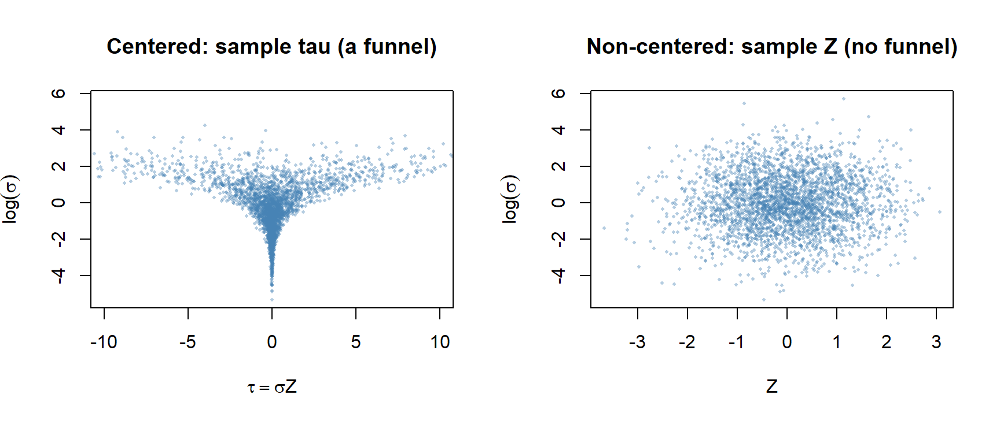
Stan or JAGS? Monnahan, Thorson & Branch (2017, Methods in Ecology and Evolution 8:339-348) compared them on population models from 5 to about 1,100 parameters. For small, simple models the choice made little difference. Stan's advantage grew with the number of parameters and how correlated they were, up to orders of magnitude, and it depended on using the non-centered form for random effects. JAGS remains handy for quick models and for models with discrete latent states.
Discussion
- For the myxomatosis model, the Metropolis sampler took 20,000 steps (about 0.11 seconds) and gave about 43 effective draws of shape. Stan needed time to compile, then 0.3 seconds to sample, and gave about 452 effective draws from 4,000. A labmate says Stan is overkill: "my sampler was faster." Who's right?
- For your own research, when would you reach for Stan, and when might JAGS, NIMBLE, or a hand-written sampler be the better choice?
- A Gibbs sampler never rejects a draw. On the correlated example above it was worth only 14 independent draws out of 200. How can a sampler that accepts everything be so inefficient?
More to explore: an interactive gallery of MCMC samplers (Chi Feng), the Stan documentation, and Betancourt's conceptual introduction to HMC.